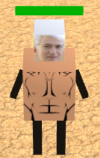
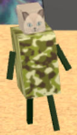
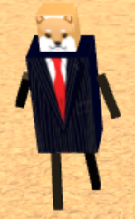
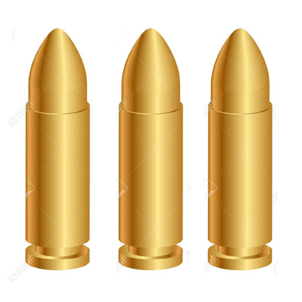
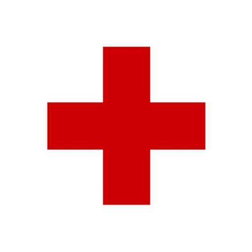
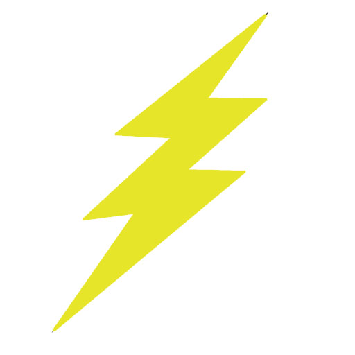

Blockheads
Gene Block is tired of all of memes on the UCLA Memes for Sick AF Tweens Facebook page. Now, he's out for revenge - help him destroy waves of the meme army!
- Use the 'left', 'right', 'up', and 'down' arrow keys to control Gene's movement.

- Use the 'space' key to shoot down enemies.


- Use the 'p' key to pause the game.
- Use the 'i' key to turn shadows on and off.
- Use the 'm' key to toggle game sounds.
- Crates will spawn at various locations and times throughout the game. Pick them up!



- Use the ',' and '.' keys to cycle through weapons. Figure out the best times to use each one!
- Pistol: shoots one bullet in the direction that the player is facing.
- Uzi: fires at a quicker rate than the pistol.
- Shotgun: deals spread damage over more area than the pistol and uzi.
- Rocket: deal immense damage to any enemy that stands in your path - assert your dominance with this weapon! (Make sure to conserve your ammo)
- Try to use the map layout to your advantage and survive as long as you can!